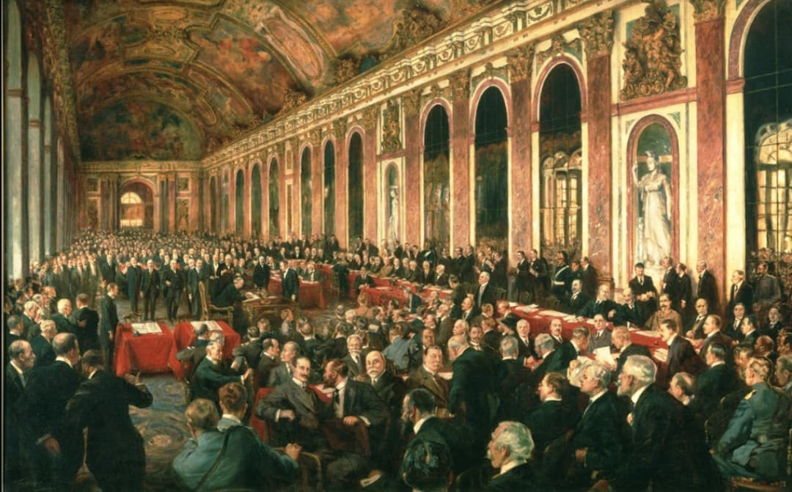
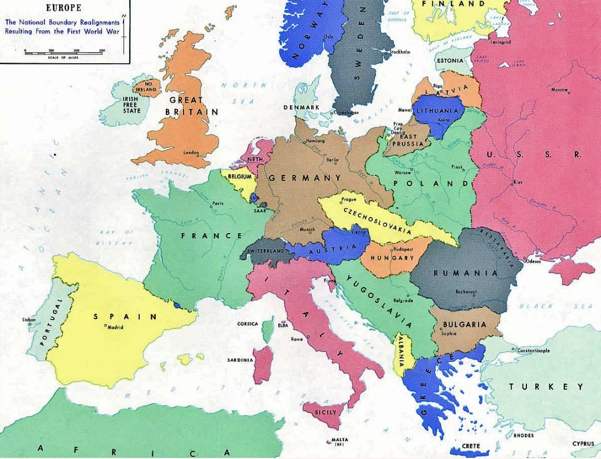
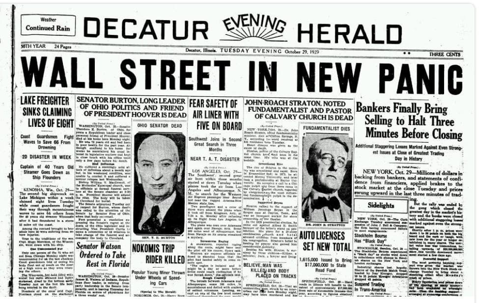
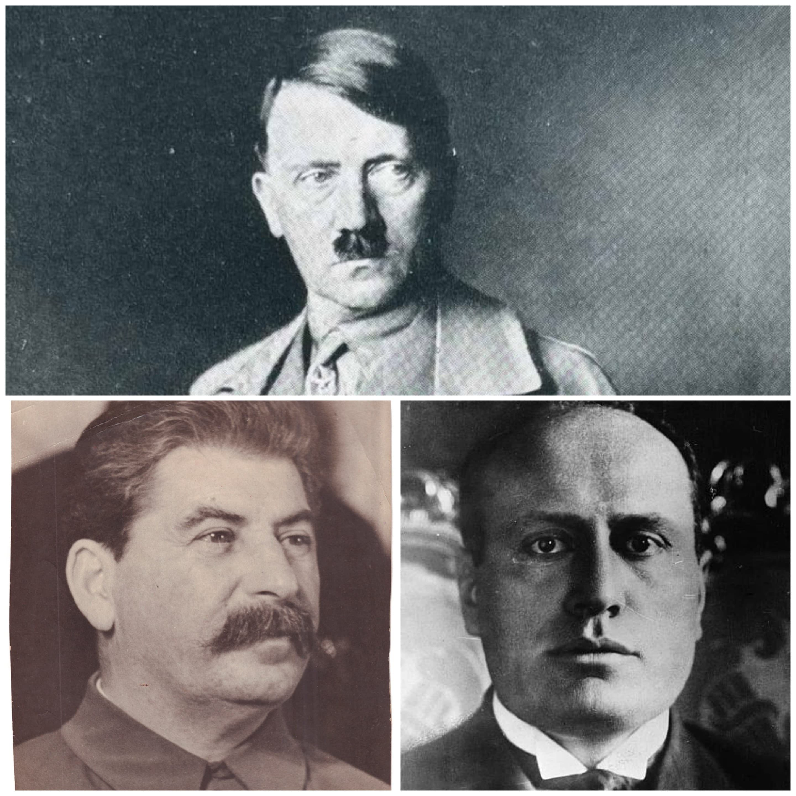
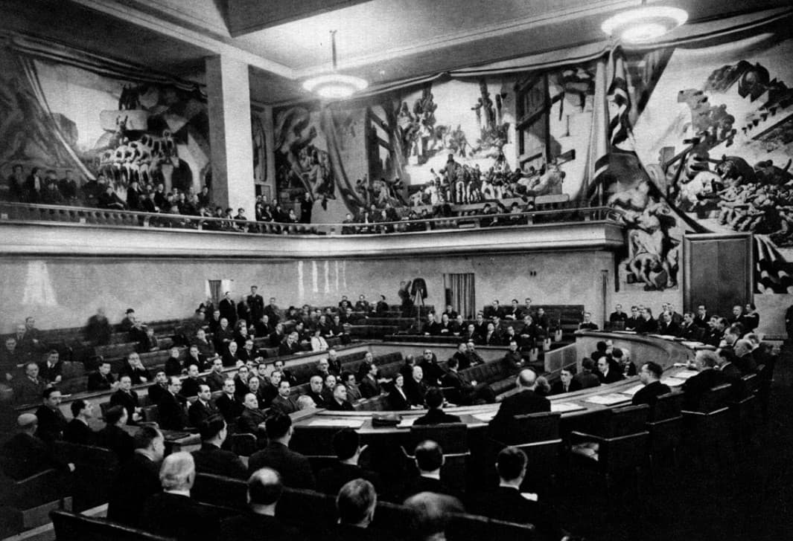

La Seconde Guerre mondiale ne commence pas “par surprise” en 1939. Elle est le résultat d’un enchaînement de décisions, de crises et de faiblesses accumulées depuis la fin de la Première Guerre mondiale en 1918. Cette fiche présente les grandes causes profondes qui rendent la guerre presque inévitable : une paix humiliante, une Europe instable, une crise économique mondiale, la montée des régimes totalitaires et l’échec des démocraties à contenir l’agression.

Le traité de Versailles met fin officiellement à la Première Guerre mondiale. Il impose à l’Allemagne :
Pour beaucoup d’Allemands, ce traité est vécu comme une humiliation. La République de Weimar doit gérer une population frustrée, appauvrie et en colère. Le sentiment de revanche devient un terrain fertile pour les mouvements nationalistes et extrémistes.

La fin de la guerre provoque l’effondrement de plusieurs empires :
De nouveaux États apparaissent (Pologne, Tchécoslovaquie, Yougoslavie, États baltes). Mais les frontières sont souvent tracées sans tenir compte des populations sur place. Des minorités se retrouvent dans des États qu’elles n’ont pas choisis, ce qui crée des tensions nationales et des revendications territoriales.
L’Europe devient un puzzle fragile, où beaucoup de pays contestent les frontières imposées par les vainqueurs.

En 1929, le krach de Wall Street déclenche une crise économique mondiale :
L’Allemagne est particulièrement touchée, car elle dépend des capitaux américains pour payer les réparations. Quand ces capitaux disparaissent, l’économie allemande s’effondre. Le chômage explose, la misère s’installe, et la confiance dans la démocratie s’effrite.
Dans ce contexte, les partis extrémistes (nazis, communistes) gagnent du terrain en promettant des solutions radicales.

Entre 1919 et 1939, plusieurs régimes autoritaires et agressifs s’installent :
Ces régimes ont en commun :
Ils rejettent la démocratie et considèrent la guerre comme un moyen légitime pour atteindre leurs objectifs.

La Société des Nations (SDN), créée en 1919, est censée garantir la paix. Mais :
Quand le Japon envahit la Mandchourie (1931) ou l’Italie l’Éthiopie (1935), la SDN se montre incapable de réagir efficacement. Les régimes agressifs comprennent qu’ils peuvent violer les règles sans être réellement punis.
Les démocraties (France, Royaume‑Uni), affaiblies par la crise et marquées par le souvenir de 14‑18, hésitent à s’engager dans un nouveau conflit. Elles pratiquent une politique d’apaisement : elles laissent Hitler avancer, en espérant qu’il s’arrêtera.
Dans les années 1930, plusieurs États remettent en cause l’ordre établi :
Chaque succès renforce les régimes agressifs et affaiblit la crédibilité des démocraties. Hitler comprend que personne ne l’arrêtera tant qu’il avance par étapes.
Entre 1918 et 1939, plusieurs facteurs se combinent :
La Seconde Guerre mondiale n’est pas un accident : elle est le résultat de ces causes profondes, accumulées pendant vingt ans. Quand l’Allemagne envahit la Pologne le 1er septembre 1939, la guerre éclate dans un contexte déjà préparé par ces erreurs, ces faiblesses et ces choix politiques.